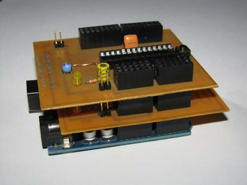
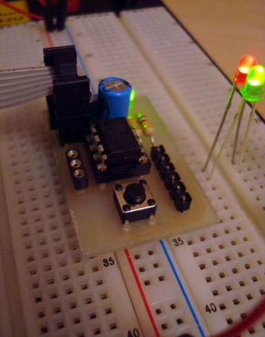

A weblog focused on interesting circuits, ideas, schematics and other information about microelectronics and microcontrollers.
E-books
Disclaimer
Because I have not tested all electronic circuits mentioned on this pages, I cannot attest to their accuracy; therefore, I do not provide a warranty of any kind and cannot be held responsible in any manner.
ATMEL AVR
Emulating a Z80 CP/M computer on ATMega88
30. April 2010 - 11:21 — adminYes, we all know many emulators of old processors "on the chip", but as far as I remember this is the first attempt to emulate a CP/M machine (including Z80) I ever seen.

USB-to-LPT converter
24. April 2010 - 15:37 — adminThere are a lot of devices with LPT (Centronics) interface, but newer computers haven't the LPT interface. Here is a solution...

Photo: Henrik Haftmann
USBTiny Mkii Programmer
18. April 2010 - 19:22 — adminLUFA-powered programmer which emulates AVRISP-MKII. It works with AVR Studio and AVRDude.
Photo: Tom_L
Super simple AVR ISP USB programmer
18. April 2010 - 19:14 — adminAn in-system programmer for AVR microcontrollers built with ATTiny44 with virtual USB firmware.
Core3duino
11. April 2010 - 13:07 — adminCore3duino is, believe it or not, three-core "Arduino cluster" in the form "an addon shield to a shield".

Picture: Instructables.com
Yaler: access small devices from the Web
3. April 2010 - 14:37 — adminYaler aims to provide a simple, open and scalable relay infrastructure for the Web of Things - i.e. simple embedded devices ("things") accessible via Web (e.g. browsers).

Ethersex - IPv6 on the AVR
3. April 2010 - 11:29 — adminEthersex is a universal platform to access microcontrolers via IP protocol (including IPv6) and makes a solid base for your own development.

Breadboard header for ATTiny x5
28. March 2010 - 12:06 — adminAre you tired with all the initial wiring (power, resonator, ICP, power cap, reset), needed again and again with every uC project? Try this!

Photo: Electronic-lab.com
SED1520 - based graphic LCD
28. March 2010 - 11:57 — adminSimple and deadly cheap LCD graphic module 122x32 pixels, controlled by SED1520 / EPSON.

Twypper: A retro-style Twitter wall
20. March 2010 - 18:08 — adminNothing but a retro toy: A Commodore typewriter as a "twitter console".